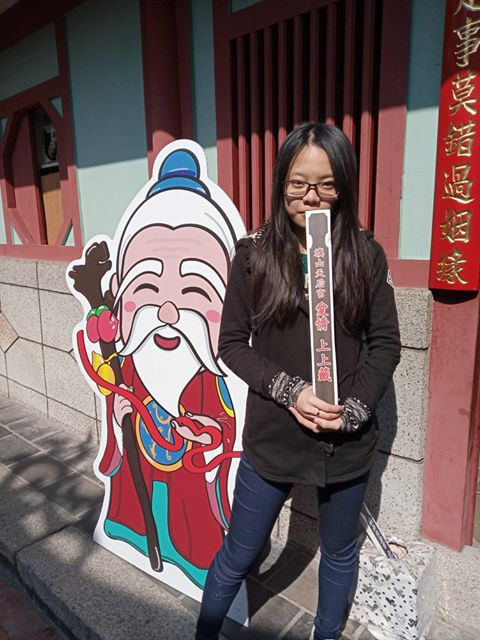

組員介紹
參加這次的網界博覽會比賽，讓我學到了很多，不管是在網頁的設計上、或者是版面配置都收穫良多，雖然以前跟現在主要還是都使用HTML、CSS居多，但這次卻學習到Bootstrap，讓我在做網頁上方便許多，不論是排版上亦或者是其他設計等等…不過因為要做自適應網站，讓大家在觀看的時候能夠比較清楚理解我們所想表達的內容，在這部份下了滿多功夫，有很多地方都需要有耐心的去慢慢調整。很感謝組員們，分工合作互相協助，可能只要少了某些組員的努力，那麼這個網頁肯定沒有這麼豐富，也很謝謝老師們在旁細心指導我們該如何解決許多的問題、也給我們許多寶貴的意見。在這次的參訪中，我了解到廟宇建築中，原來每間廟的建築看似大同小異，卻有著與眾不同的細節以及融入了當地的特色或是當時在建廟時的一些比較特別的事物，這些細節的建築如果沒有聽過廟公的詳細介紹，我可能一輩子都不知道吧！

這次的網界博覽會，一開始大家還不太確定要選擇甚麼主題來做，經過長時間討論還有老師給了我們方向，我們最後決定要以旗山天后宮為主題，因為旗山天后宮跟我們有點距離所以一開始在討論要如何前往，我們就分工合作上網查詢了許多資料，最後決定要在左營捷運站集合再搭客運前往目的地，接著大家的時間也不好配合，然後彼此就提出自己可以的時間討論過後也沒問題了，到了當天的採訪廟公非常熱情的跟我們說了許多平常不會注意到的建築細節，還跟我們分享了他一些故事，整個過程相當輕鬆。
這次去旗山天后宮，之前家人有帶我去過，但是那時候覺得很無聊，這次去發現有很多好吃的好玩的。我們是上午去的，但廟公因為早上去拜拜，所以到下午才見到廟公，之前去廟裡拜拜，都拜拜完就走，沒有在注意廟長怎樣，拜這個神是求什麼的，在聽廟公講說的過程，了解到原來廟裡的建築設計都是有意義的，也了解進廟要注意的禮節。那天也吃了滿多好吃的，其中蛋中蛋印象最深，因為裡面的起司會牽絲，途中買了家人喜歡吃的香蕉蛋糕，下次有機會的話，還想再去。
參加這次的網界博覽會比賽，讓我學習到很多，在蒐集資料的過程中不僅僅讓我了解到了臺灣的文化，也讓我了解到了廟宇的歷史、神尊的由來等，在最初選定天后宮的時候我就非常的感興趣，因為爸爸的興趣就是到台灣各處去拜拜，所以都會聽他聊到一些神的故事，每次他講的時候我都聽得非常入迷，就像聽故事一般，在找天后宮的資料時也順便了解到了旗山，旗山的古蹟都非常的有特色，而我最喜歡的建築就是聖若瑟天主堂，因為它是一棟仿哥德式建築物，它的外觀非常優雅，深深的吸引我的目光，也感謝這次組員們的努力，才有這麼好的作品，也希望這次的作品能被大家看見。
我們這組的主題是旗山天后宮，因為時間不好配合，所以最後我沒有跟著組員一起去實地走訪真的很不好意思，另外還要謝謝我們班導陪著一起去天后宮，這次的比賽時間比上次的困難還多，因為近期武漢肺炎的疫情越來越嚴重，時間地點條件更加不好去協調。透過這次的網界比賽讓我更加了解旗山這個地方，旗山天后宮我之前有和家人去過，所以對這個地方不陌生，但是周邊的美食我卻不知道，在製作網頁的過程中讓我了解到旗山有許多美食，非常推薦大家去旗山這個地方觀光！
對於旗山，我沒有太多的記憶，往常旅遊經驗也都是走過就忘，這次再度重返不僅要重溫當時的兒時情懷，還要順勢將專題給完成，沿路上，古典風味十足的老街，給予了我莫名的溫暖，雖然不像那擁擠到寸步難行的鹿港般，卻也不至於太過稀疏，彷彿走在人生回憶的潮流，一步步，內心逐漸沉澱；不知不覺中在幾條巷子裡頭繞一繞便到了天后宮前，首先映入眼簾的是，輝煌絢麗的拱門，大到非得抬起頭來仰望才能盡收眼底，這或許就是凡人仰望神祉的感覺，進廟後虔誠參拜，訪問完廟公後便離開了，這趟旅程說長不長卻讓我印象深刻，或許親自走上一次才能記得當地有多美好。
參考資料
廟宇漫談 》
書名：高雄市古蹟及歷史建築
出版社：高雄市政府文化局
作者：柯耀源
旗廟特色 》脈絡循序 》
旗廟特色 》鬼斧神工 》
書名：高雄市古蹟及歷史建築
出版社：高雄市政府文化局
作者：柯耀源
旗廟特色 》輾轉更迭 》
聖賢細講 》境主公 》
聖賢細講 》金虎將軍 》
聖賢細講 》田都元帥 》
旗特美食 》旗山天后宮DM的資料
（若未有參考資料的照片，皆由本團隊自行拍攝）